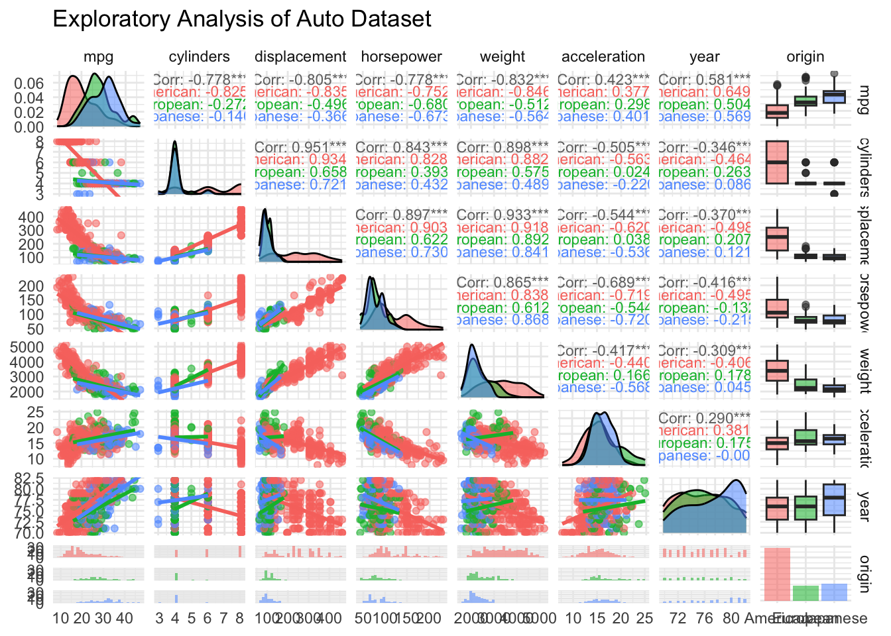
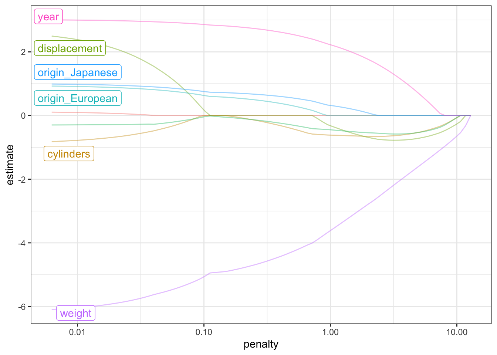
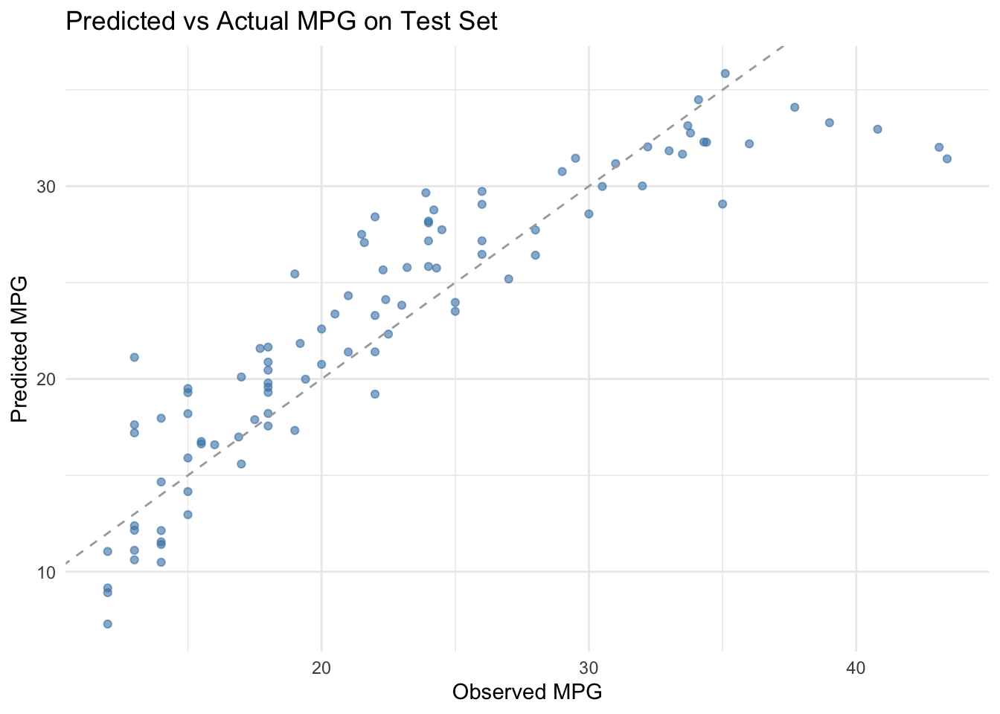
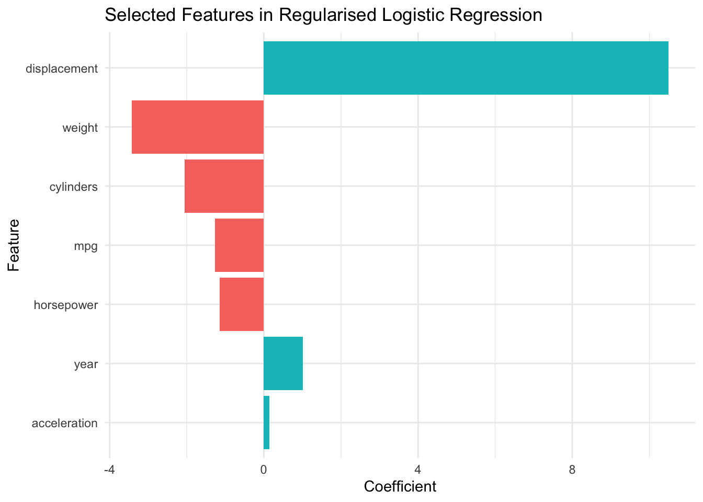
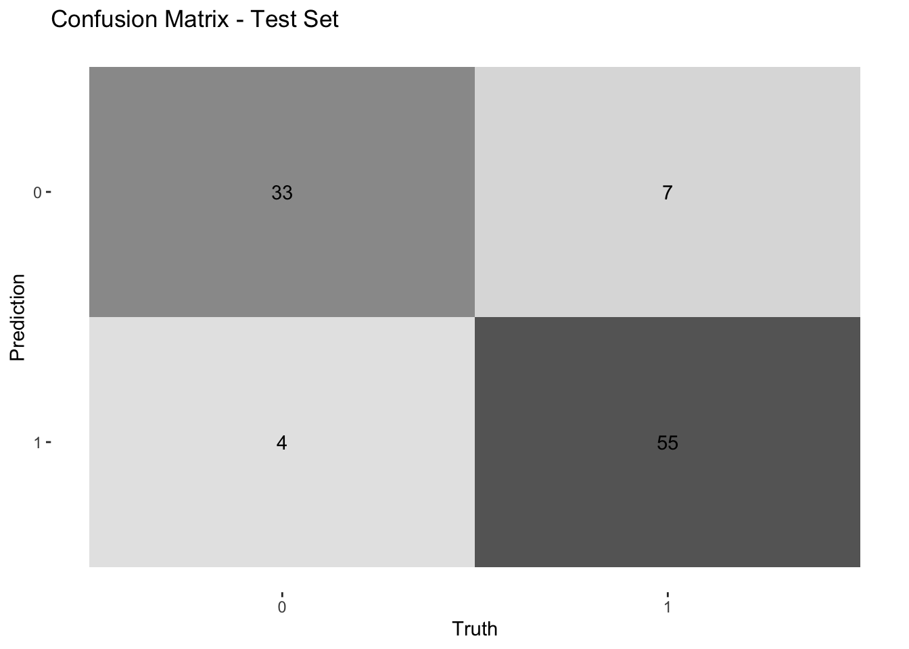
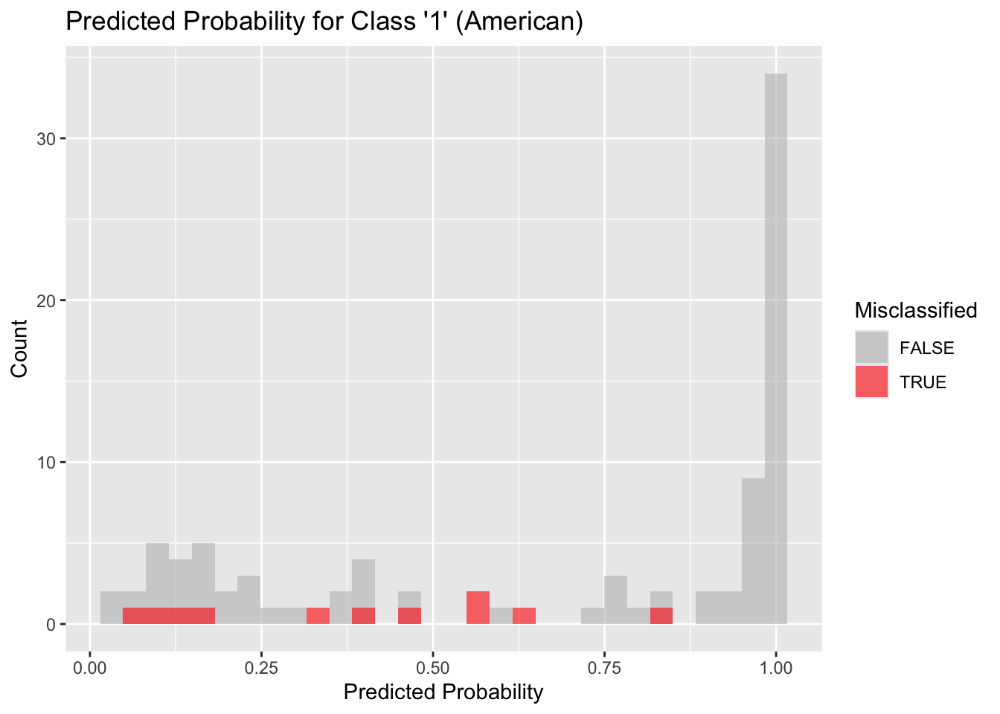
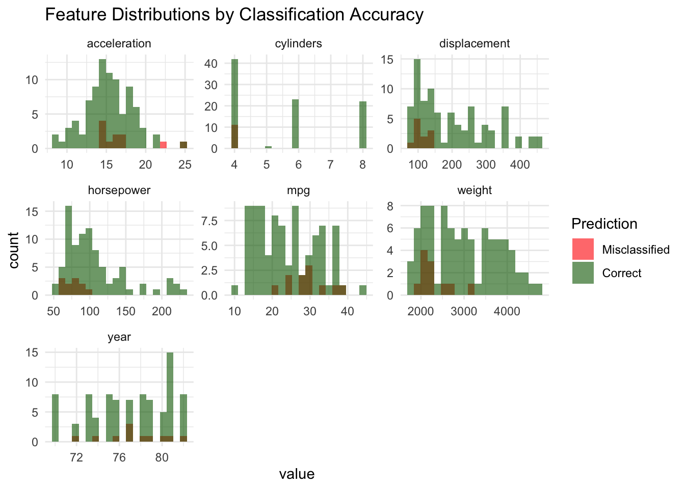

library(tidymodels)
library(tidyverse)
library(GGally)
library(ggplot2)
library(yardstick)
data(Auto, package = "ISLR2")
auto <- tibble(Auto)MATH6168 Coursework 1 - Zhe GUAN 36516473
Pre-step: Loading required packages.
Question 1 (data splitting)
- Produce an appropriate plot for graphical exploratory data analysis. Comment on any substantive relationship among the variables.
NOTE: The categorical variable origin are factored before plotting to avoid introducing unintended order, which could affect regression and classification.
auto <- as_tibble(Auto) |>
mutate(origin = recode(as.factor(origin),
`1` = "American",
`2` = "European",
`3` = "Japanese"))
ggpairs(
data = auto,
columns = 1:8, # Continuous variables
mapping = aes(color = origin, alpha = 0.5),
upper = list(continuous = wrap("cor", size = 3)),
lower = list(continuous = wrap("smooth", method = "lm", se = FALSE))
) +
theme_minimal() +
labs(title = "Exploratory Analysis of Auto Dataset")

auto data.
The pairs plot shows several strong relationships among the variables:
There is a strong negative correlation between
mpgand variables such asdisplacement,horsepower, andweight(correlations ≈ -0.8), indicating the common sense that heavier and more powerful cars tend to consume more fuel.Horsepowerandweightare highly positively correlated (≈ 0.93), suggesting that more powerful cars are also heavier.Yearis positively associated withmpg, suggesting that fuel efficiency has improved over time.Vehicles from different
origingroups show substantial differences in fuel efficiency and size. For example, cars from origin Japanese tend to be more fuel-efficient and lighter, while those from origin American are larger and less efficient.etc.
- In
R, specify a training-test split of the auto data. Prior to splitting the data, set the random number seed equal to your student number.
set.seed(36516473)
# Split the data: 75% training, 25% testing
auto_split <- initial_split(auto, prop = 0.75)
# Create training and testing sets
auto_train <- training(auto_split)
auto_test <- testing(auto_split)75% of data is for training and the left for testing.
- In
R, define the folds for a fold cross-validation partition of the training data, repeated five times.
auto_folds <- vfold_cv(auto_train, v = 10, repeats = 5)Question 2 (regressions)
- Specify an appropriate recipe on the training data to fit shrinkage regression with a target of
mpgand all other variables being features exceptname.
auto_recipe <- recipe(mpg ~ ., data = auto_train) |>
step_rm(name) |>
step_dummy(all_nominal_predictors()) |>
step_normalize(all_predictors())A recipe is specified for shrikage regression. Nominal predictors were converted to dummy variables, and all predictors were standardised to ensure shrinkage penalties are applied appropriately. (Otherwise, the model becomes more “hesitant” to assign large coefficients \(\beta\) to variables with large scales, since doing so would lead to a bigger penalty as shown below.)
\[ \text{Ridge L2:} \operatorname{minimize} \quad \sum\left(y_i-\hat{y}_i\right)^2+\lambda \sum \beta_j^2 \] \[ \text{Lasso L1:} \operatorname{minimize} \quad \sum\left(y_i-\hat{y}_i\right)^2+\lambda \sum |\beta_j| \]
- Perform feature selection for a regression on mpg using the elastic net. Choose appropriate values of the tuning parameters and comment on which features are included in the final predictive model. (Hint: you may find the
tidyfunction useful for extracting the model coefficients.)
elastic_spec <- linear_reg(
penalty = tune(), # tuning
mixture = 0.5 # mixed L1, L2 and it would not totaly delete one of prdictors
) |>
set_engine("glmnet")
elastic_workflow <- workflow() |>
add_model(elastic_spec) |>
add_recipe(auto_recipe)
grid_vals <- grid_regular(
penalty(range = c(-4, 0)), # log10 scale: 10^-4 ~ 10^0
levels = 10
)
elastic_tuned <- tune_grid(
elastic_workflow,
resamples = auto_folds,
grid = grid_vals,
metrics = metric_set(rmse, rsq)
)
best_params <- select_best(elastic_tuned, metric = "rmse")
final_elastic <- finalize_workflow(elastic_workflow, best_params)
elastic_fit <- fit(final_elastic, data = auto_train)
elastic_fit |>
extract_fit_parsnip() |>
autoplot(top_n = 6) +
theme_bw()

Although the best-performing model based on RMSE selected a penalty of 0.0005, we observed from the coefficient path plot that a penalty around 0.1 leads to a sparser model with better feature selection and similar predictive performance. We therefore manually selected a more interpretable model with penalty = 0.1 for final model.
chosen_params <- tibble(penalty = 0.1, mixture = 0.5)
final_elastic_manual <- finalize_workflow(elastic_workflow, chosen_params)
elastic_fit_manual <- fit(final_elastic_manual, data = auto_train)
coef_tbl <- tidy(elastic_fit_manual)
selected_features <- coef_tbl |>
filter(term != "(Intercept)", estimate != 0)
print(selected_features)# A tibble: 7 × 3
term estimate penalty
<chr> <dbl> <dbl>
1 cylinders -0.00606 0.1
2 displacement 0.174 0.1
3 horsepower -0.0409 0.1
4 weight -5.06 0.1
5 year 2.86 0.1
6 origin_European 0.631 0.1
7 origin_Japanese 0.754 0.1After visual inspection of the coefficient path plot, we manually selected a penalty value of 0.1 with a mixture of 0.5 to strike a balance between prediction accuracy and model interpretability.
The final model retained the following features:
cylinders (weak predictor)
weight
year
horsepower (weak predictor)
displacement
origin_European
origin_Japanese
c.Calculate predictions of the test set and plot against the observed mpg. What are the RMSE and on the test set? How do these compare to the corresponding values on the training set? Explain this comparison. Which vehicle in your test set do you predict to have the highest mpg?
test_preds <- predict(elastic_fit_manual, auto_test) |>
bind_cols(auto_test)
test_metrics <- test_preds |>
metrics(truth = mpg, estimate = .pred)
print(test_metrics)# A tibble: 3 × 3
.metric .estimator .estimate
<chr> <chr> <dbl>
1 rmse standard 3.41
2 rsq standard 0.816
3 mae standard 2.60 train_preds <- predict(elastic_fit_manual, auto_train) |>
bind_cols(auto_train)
train_metrics <- train_preds |>
metrics(truth = mpg, estimate = .pred)
print(train_metrics)# A tibble: 3 × 3
.metric .estimator .estimate
<chr> <chr> <dbl>
1 rmse standard 3.29
2 rsq standard 0.820
3 mae standard 2.47 ggplot(test_preds, aes(x = mpg, y = .pred)) +
geom_point(color = "steelblue", alpha = 0.6) +
geom_abline(slope = 1, intercept = 0, linetype = "dashed", color = "darkgray") +
labs(
title = "Predicted vs Actual MPG on Test Set",
x = "Observed MPG",
y = "Predicted MPG"
) +
theme_minimal()

The final Elastic Net model was evaluated on the held-out test set. The RMSE was 3.41, and \(R^2\) was 0.816. In comparison, the training set RMSE was slightly lower at 3.29, with an \(R^2\) of 0.820.
This close performance between training and test sets indicates that the model generalizes well.
test_preds |>
arrange(desc(.pred)) |>
slice(1) |>
select(name, mpg, .pred)# A tibble: 1 × 3
name mpg .pred
<fct> <dbl> <dbl>
1 honda civic 1300 35.1 35.8The vehicle predicted to have the highest mpg is honda civic 1300, with an actual mpg of 35.1 and a predicted mpg of 35.8.
Question 3 (classification)
- Define a new binary variable
usawhich takes value 1 if the vehicle is American and 0 if it is European or Japanese. Create new training and test sets, and a new set of cross-validation folds, stratified on this variable.
set.seed(36516473)
#add column usa
auto <- auto |>
mutate(usa = if_else(origin == "American", 1, 0),
usa = as.factor(usa)) A new binary variable usa was created, taking the value 1 if the vehicle was American, and 0 otherwise.
#split data based on usa
auto_split <- initial_split(auto, prop = 0.75, strata = usa)
auto_train <- training(auto_split)
auto_test <- testing(auto_split)
#new fold
auto_folds <- vfold_cv(auto_train, v = 10, repeats = 5, strata = usa)
print("Train set:")[1] "Train set:"table(auto_train$usa)
0 1
110 183 print("Test set:")[1] "Test set:"table(auto_test$usa)
0 1
37 62 The data was re-split into training and test sets using stratified sampling on this variable. Additionally, repeated 10-fold cross-validation folds were generated from the training set, also stratified by usa, to ensure balanced class representation in each fold.
usa_recipe <- recipe(usa ~ ., data = auto_train) |>
step_rm(name, origin) |>
step_dummy(all_nominal_predictors()) |>
step_normalize(all_predictors())
logit_spec <- logistic_reg(
penalty = tune(), # \lambda
mixture = tune() # \alpha: Lasso vs Ridge
) |>
set_engine("glmnet") |>
set_mode("classification")
logit_workflow <- workflow() |>
add_model(logit_spec) |>
add_recipe(usa_recipe)
grid_vals <- grid_regular(
penalty(range = c(-4, 0)), # log10 scale: 10^-4 ~ 1
mixture(range = c(0, 1)),
levels = 10
)
logit_tuned <- tune_grid(
logit_workflow,
resamples = auto_folds,
grid = grid_vals,
metrics = metric_set(roc_auc, accuracy)
)
best_params <- select_best(logit_tuned, metric = "roc_auc")
final_logit <- finalize_workflow(logit_workflow, best_params)
logit_fit <- fit(final_logit, data = auto_train)
logit_coefs <- tidy(logit_fit)
selected_features <- logit_coefs |>
filter(term != "(Intercept)", estimate != 0)
print(best_params)# A tibble: 1 × 3
penalty mixture .config
<dbl> <dbl> <chr>
1 0.000278 0.333 Preprocessor1_Model032We performed feature selection for the classification task predicting whether a vehicle is American (usa) using logistic regression.
A grid search was conducted over a range of penalty and mixture values using stratified 10-fold cross-validation with 5 repeats.
The best model achieved a penalty of 0.00028 and a mixture of 0.33, indicating a balance leaning slightly toward Ridge regression (L2 regularization) with some sparsity from Lasso (L1).
selected_features |>
ggplot(aes(x = reorder(term, abs(estimate)), y = estimate, fill = estimate > 0)) +
geom_col(show.legend = FALSE) +
coord_flip() +
labs(title = "Selected Features in Regularised Logistic Regression",
x = "Feature", y = "Coefficient") +
theme_minimal()

The final predictive model retained 7 features:
Positive coefficients: displacement(strong), year, acceleration(weak) – these increase the likelihood of a vehicle being American.
Negative coefficients: weight(strong), cylinders, mpg, horsepower – these decrease the likelihood of being American.
These results indicate: American cars tend to be heavier, larger (higher displacement), and less fuel-efficient than Japanese or European cars.
c.Calculate predictions of the test set. Investigate which test cases were misclassified, and discuss at least one plot to summarise your conclusions.
test_preds <- predict(logit_fit, auto_test, type = "class") |>
bind_cols(predict(logit_fit, auto_test, type = "prob")) |>
bind_cols(auto_test)
misclassified <- test_preds |>
filter(.pred_class != usa)
print(misclassified)# A tibble: 11 × 13
.pred_class .pred_0 .pred_1 mpg cylinders displacement horsepower weight
<fct> <dbl> <dbl> <dbl> <int> <dbl> <int> <int>
1 0 0.891 0.109 25 4 97.5 80 2126
2 0 0.941 0.0594 28 4 90 75 2125
3 0 0.530 0.470 24.5 4 98 60 2164
4 0 0.603 0.397 30 4 111 80 2155
5 0 0.678 0.322 30.5 4 98 63 2051
6 0 0.881 0.119 33.5 4 98 83 2075
7 1 0.150 0.850 21.1 4 134 95 2515
8 1 0.418 0.582 27.2 4 141 71 3190
9 1 0.429 0.571 29.8 4 134 90 2711
10 0 0.831 0.169 39 4 86 64 1875
11 1 0.352 0.648 36 4 120 88 2160
# ℹ 5 more variables: acceleration <dbl>, year <int>, origin <fct>, name <fct>,
# usa <fct>logit_cm <- test_preds |>
conf_mat(truth = usa, estimate = .pred_class)
logit_cm |>
autoplot(type = "heatmap") +
labs(title = "Confusion Matrix - Test Set")
logit_cm |>
summary()# A tibble: 13 × 3
.metric .estimator .estimate
<chr> <chr> <dbl>
1 accuracy binary 0.889
2 kap binary 0.766
3 sens binary 0.892
4 spec binary 0.887
5 ppv binary 0.825
6 npv binary 0.932
7 mcc binary 0.768
8 j_index binary 0.779
9 bal_accuracy binary 0.889
10 detection_prevalence binary 0.404
11 precision binary 0.825
12 recall binary 0.892
13 f_meas binary 0.857ggplot(test_preds, aes(x = .pred_1, fill = .pred_class != usa)) +
geom_histogram(position = "identity", alpha = 0.6, bins = 30) +
labs(title = "Predicted Probability for Class '1' (American)",
x = "Predicted Probability", y = "Count",
fill = "Misclassified") +
scale_fill_manual(values = c("gray", "red"))
The predicted probability histogram shows that most misclassifications occurred in the mid-range probabilities (between 0.1 and 0.7), where the model is least confident.
Notably, almost no misclassifications occurred when the model predicted with high confidence (above 0.9). This suggests that when the model is confident, it is generally accurate.
test_preds <- test_preds |>
mutate(correct = .pred_class == usa)
numeric_vars <- test_preds |>
select(where(is.numeric)) |>
select(-.pred_0, -.pred_1) |>
select(-matches("^\\.pred_class$|^usa$")) |>
colnames()
long_preds <- test_preds |>
pivot_longer(cols = all_of(numeric_vars), names_to = "variable", values_to = "value")
ggplot(long_preds, aes(x = value, fill = correct)) +
geom_histogram(position = "identity", alpha = 0.6, bins = 20) +
facet_wrap(~variable, scales = "free") +
scale_fill_manual(values = c("red", "darkgreen"), labels = c("Misclassified", "Correct")) +
labs(
title = "Feature Distributions by Classification Accuracy",
fill = "Prediction"
) +
theme_minimal()
The faceted histograms show that misclassifications are most likely to occur in vehicles with moderate acceleration, low-range horsepower, and low displacement,etc. These are regions where American and non-American vehicles tend to overlap, making it difficult for the model to distinguish between them.
Possible Improvement for Models
Future improvements may include incorporating non-linear models to capture more complex interactions among features. Nonetheless, the results obtained from regularised linear models have provided strong baseline performance of the dataset.